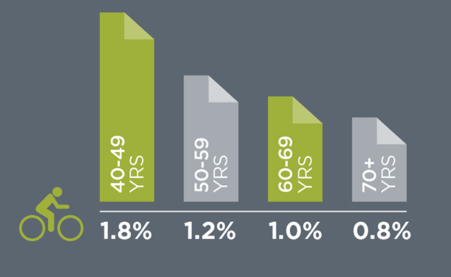
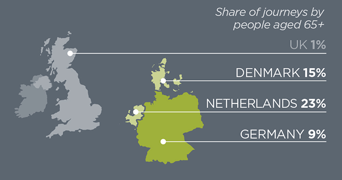
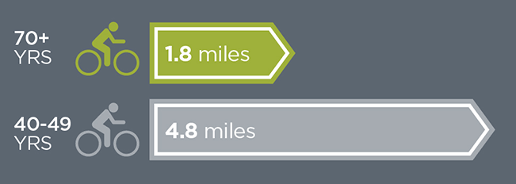
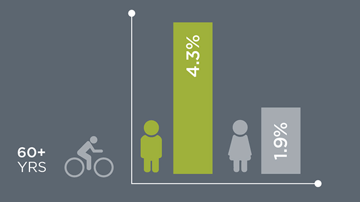
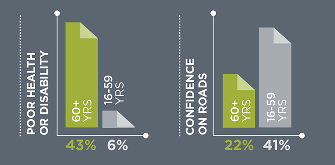
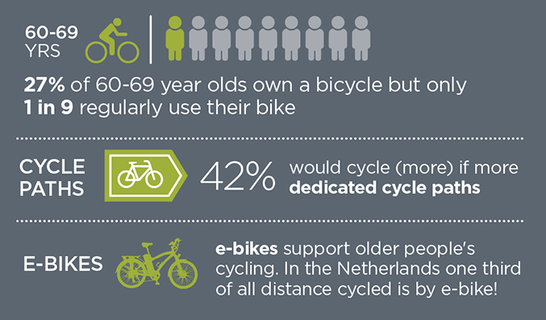

1 LOW LEVEL OF CYCLING AMONG OLDER PEOPLE IN THE UK
The share of journeys made by bicycle is low for all all age groups, but particularly low in older age.

2 DIFFERENT STORY ELSEWHERE
Cycling is an important method of transport in older age in other parts of Northern Europe.

3 OLDER PEOPLE MAKE SHORTER, MORE LOCALISED CYCLE JOURNEYS
Older people’s cycle journeys are shorter than younger adults’ and are usually for personal business or social purposes (as opposed to commuting)

4 OLDER MEN CYCLE MORE THAN OLDER WOMEN
Older men are twice as likely to cycle as older women, raising concerns over equity.

5 LACK OF CONFIDENCE TO CYCLE ON ROADS
Nearly half of older people feel it is physically difficult for them to cycle and only one in five are confident cycling on roads.

6 BUT THERE IS POTENTIAL FOR MANY MORE OLDER PEOPLE TO CYCLE

7 MORE CYCLING WILL BENEFIT HEALTH IN LATER LIFE
Cycling could make a valuable contribution in promoting active ageing and prolonged independence and good health.
Physical activity declines with age to the extent that by 75 years only 1 in 10 men and 1 in 20 women are sufficiently active for good health.
8 ABSENCE OF OLDER PEOPLE CYCLING IS GETTING NOTICED
Public figures are starting to draw attention to the unequal distribution of cycling amongst the population.
At the moment cycling is disproportionately young and male and that’s because of the conditions. I suppose those are the people who feel able to cycle…What I want to see from these changes, and I think we will see, is far more women doing it, far more older people doing it.
London’s Cycling Commissioner Andrew Gilligan discussing the Mayor of London’s plans for cycling in the capital.
SOURCES
1. National Travel Survey 2013 (data for England) / 2. Data for 2000-02 reported in Pucher and Buehler (2012) / 3. National Travel Survey 2008-2010 (data for GB) / 4. National Travel Survey 2008-2010 (data for GB) / 5. DfT Climate Change and Transport Choices Segmentation Model project (2009-2010 data for England) / 6a. National Travel Survey 2008-2010 (data for GB) 6b. DfT Climate Change and Transport Choices Segmentation Model project (2009-2010 data for England) 6c. KiM (2014). Mobiliteitsbeeld 2014. Netherlands Institute for Transport Policy Analysis / 7. Public Health England (2014). Everybody Active Every Day: An Evidence-based Approach to Physical Activity. Public Health England, London / 8. Watts, J. (2014) ‘London needs more women on bikes as ‘macho’ cycling culture causes accidents, says Mayor’s Cycling Commissioner’. London Evening Standard 15 October 2014
Funded by EPSRC as part of Lifelong Health and Wellbeing Programme – Grant No. EP/K037242/1